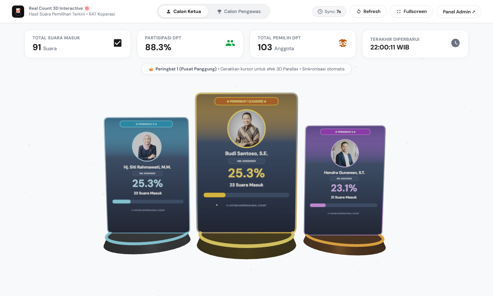

★ Solusi Pemilihan Digital & Doorprize RAT
Platform E-Voting, Bilik Undian, & Real Count 3D Interaktif
Solusi menyeluruh suksesi kepemimpinan Rapat Anggota Tahunan (RAT) Koperasi. Menghadirkan pemilihan suara nir-kertas (*paperless*), panggung undian *doorprize live*, dan visualisasi hasil 3D panggung olimpiade berkecepatan tinggi.
http://kiosk.local/e-voting/real_count
● LIVE 3D STAGE

100% Cepat & Sah
Akumulasi Real-Time
Hasil suara terhitung detik demi detik tanpa risiko manipulasi kertas suara manual.
RFID & QR Token
Otentikasi 1-Ketukan
Pemilih cukup *tap* kartu fisik atau scan QR untuk membuka bilik suara dalam 1 detik.
Visual 3D & Undian
Audiens RAT Terpukau
Panggung 3D dinamis dan mesin pengacak doorprize yang adil & spektakuler di layar proyektor.